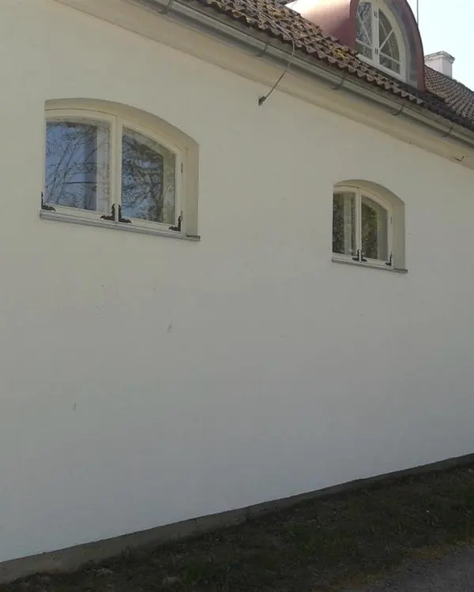
Ehitustööd
Elamute ja mitteeluhoonete ehitus, abihooned, piirdemüürid, trepid ja terrassid.
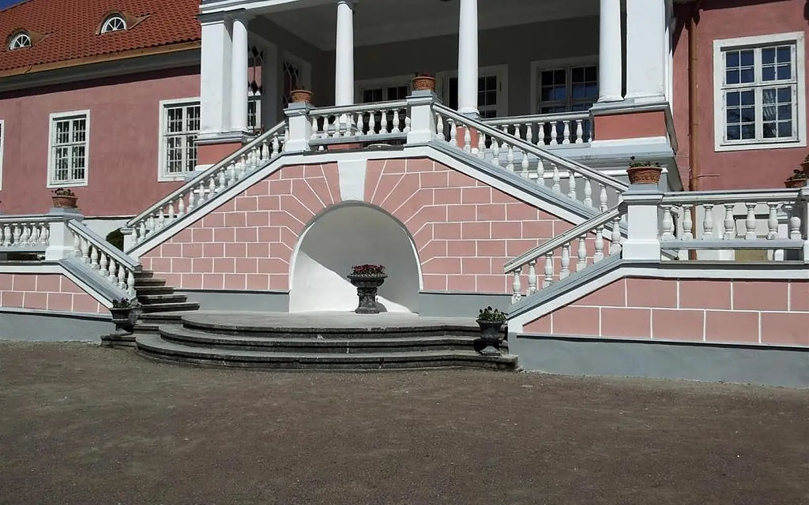
Kunda · Lääne-Virumaa · alates 2010
Ersi Ehitaja OÜ teeb ehitus-, remont- ja viimistlustöid ning projekteerib ja paigaldab ventilatsiooni. Tegutseme Tartumaal, Lääne-Virumaal ja Harjumaal.
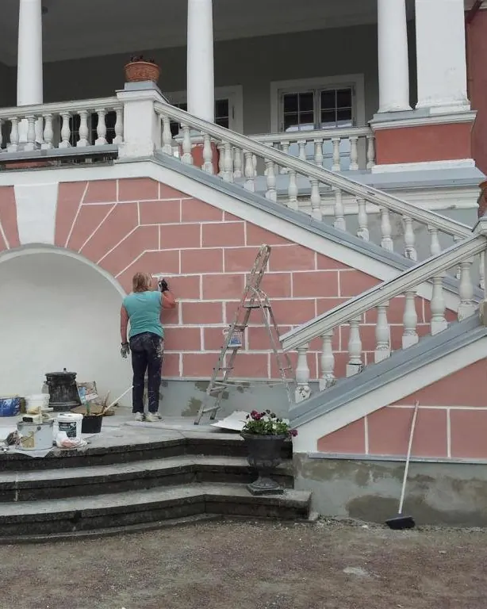
Ettevõttest
Ersi Ehitaja OÜ on aastal 2010 asutatud ehitusfirma, mis tegeleb nii ehitus-, remont- kui ka viimistlustöödega.
Lisaks pakume ventilatsiooni projekteerimist koos paigalduse ning muude ventilatsioonitöödega.
Meie eesmärk on pakkuda tellitud töödele kiiret ja kvaliteetset terviklahendust.
Teenused
Elamute ja mitteeluhoonete ehitus, remont ja viimistlus. Ventilatsioonitöödel on oma kontakt.

Elamute ja mitteeluhoonete ehitus, abihooned, piirdemüürid, trepid ja terrassid.
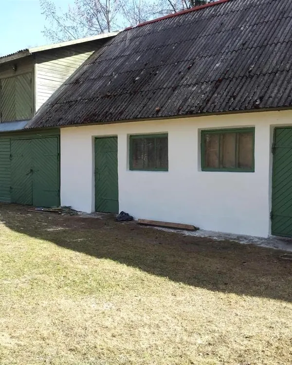
Vanade hoonete, fassaadide, müüride ja treppide remont, et hoone oleks taas korras ja kasutuses.
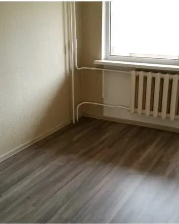
Sise- ja välisviimistlus: seinad, laed, põrandad, trepid, krohvimine ja värvimine.
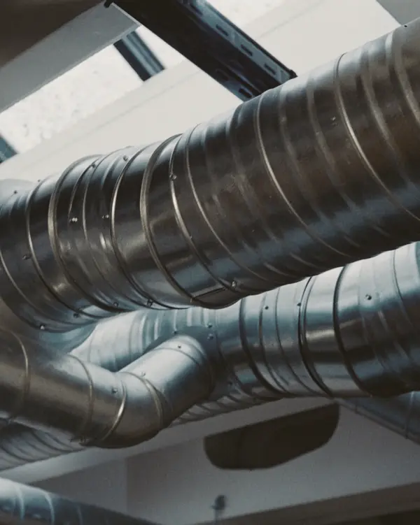
Ventilatsiooni projekteerimine koos paigaldusega ning muud ventilatsioonitööd.
Ventilatsioon: +372 510 0776Enne ja pärast
Lohistage joont, et näha muutust. Pildid on meie tehtud töödest.
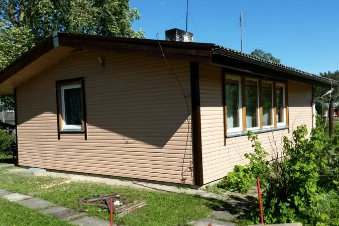
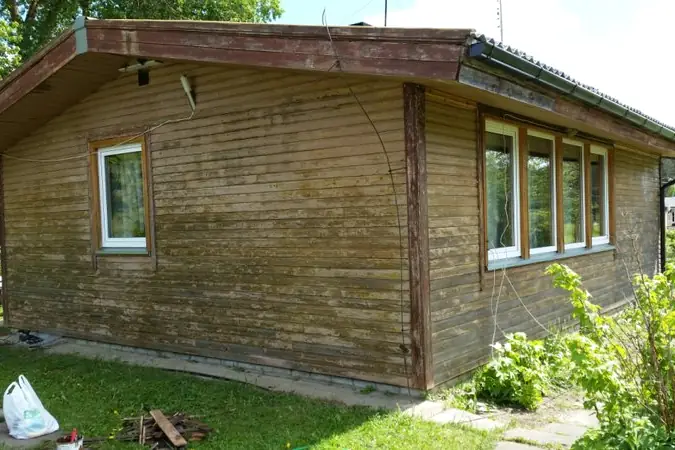
EnnePärast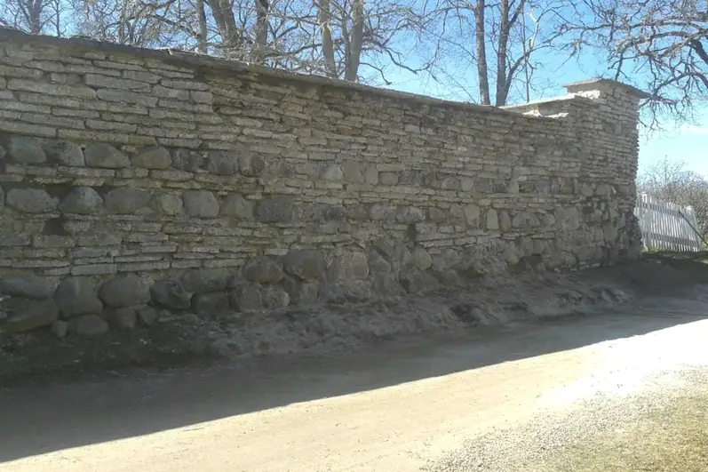
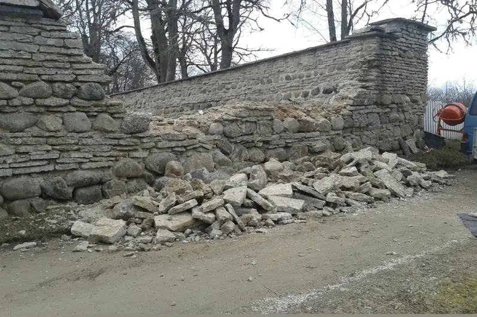
EnnePärast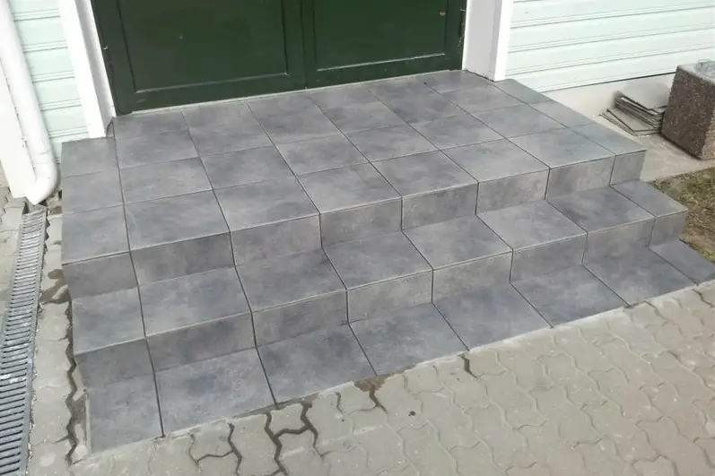
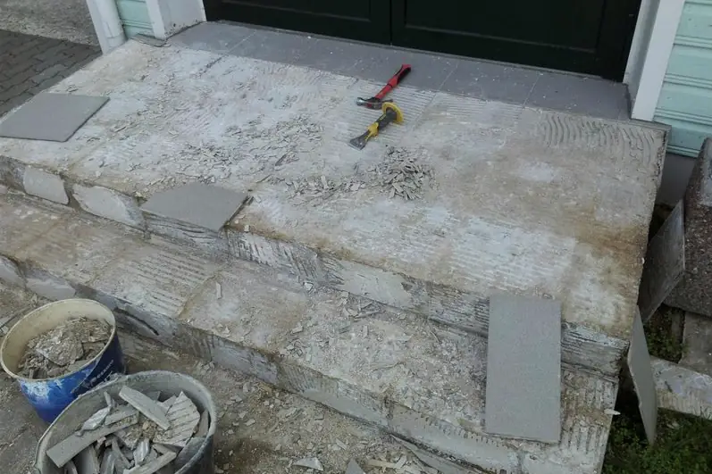
EnnePärast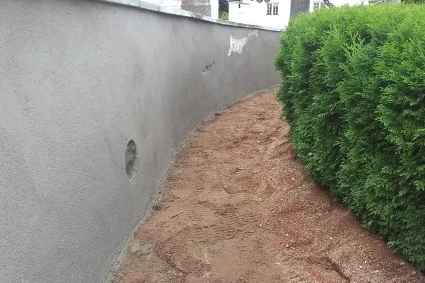
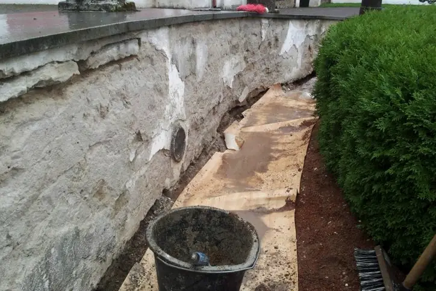
EnnePärastTehtud tööd
Valik pilte meie tehtud töödest. Rohkem pilte on meie Facebooki lehel.
Rohkem pilte FacebookisTööde tellimine
Kirjutage, mis on vaja teha ja kus objekt asub. Pildid aitavad töö mahtu kiiremini mõista.
Vajadusel tuleme objektile, täpsustame töö ja teeme pakkumise.
Lepime kokku aja ja teeme töö ära.
Tööpiirkond
Meie kodu on Kundas. Töid teeme Lääne-Virumaal, Harjumaal ja Tartumaal.
Koidu tn 81-40, Kunda
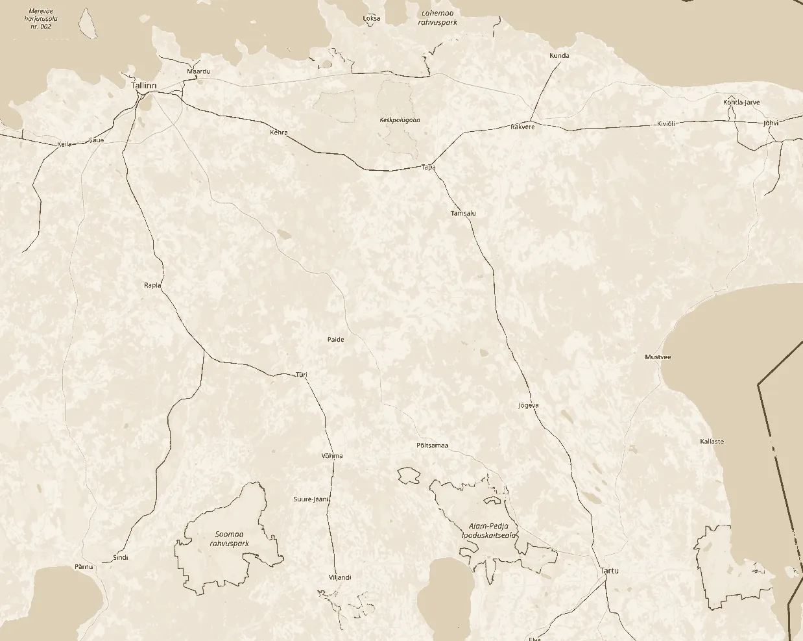
KundaHarjumaaLääne-VirumaaTartumaa © OpenStreetMapKontakt
Kirjutage, mis on vaja teha, või helistage otse.